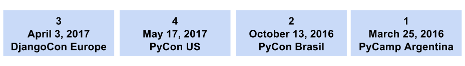
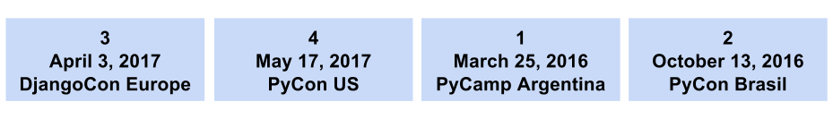

Продвинутые запросы в Django: сортировка событий по дате
Представьте ситуацию, в которой в нашем приложении были бы события (запланированные задачи, встречи, Python−конференции по всему миру), происходящие в разные моменты времени. Мы хотели бы отображать их пользователю в виде простого списка. Учитывая, что мы в Феврале 2017 года, какой способ сортировки событий был бы лучшим с точки зрения пользователя?
Чтобы было проще ответить, мы можем немного изменить вопрос: какое событие из списка было бы наиболее значимо для пользователя? Я полагаю, что хороший ответ — ближайшее предстоящее мероприятие DjangoCon Europe. Круто, покажем его первым. Какое событие второе по значимости? Ну, учитывая, что PyCamp Argentina и PyCon Brasil давно прошли, то хорошим выбором была бы конференция PyCon US. У нас осталось два прошедших события, какое из них должно идти следующим? По моему личному мнению, самые недавние события должны быть первыми, чем старее событие, тем оно менее важно. Итак, вот какой порядок мы придумали в итоге:

Давайте взглянем поближе, что мы сделали. Сначала идут предстоящие события, упорядоченные хронологически (т.е. по порядку наступления), а затем прошедшие события, упорядоченные в обратном хронологическом порядке. Странно.
Хорошо, и как нам теперь построить запрос в базу данных, чтобы отобразить эти события во вьюхе Django?
Простой подход
Простым решением было бы написать два отдельных запроса и соединить результаты. Вот, как это могло бы выглядеть:
from django.utils import timezone from myapp.models import Event class EventListView(generics.ListView): def get_queryset(self): now = timezone.now() upcoming = Event.objects.filter(date__gte=now).order_by('date') passed = Event.objects.filter(date__lt=now).order_by('-date') return list(upcoming) + list(passed)
Главная проблема здесь то, что выполняя эти два запроса, мы извлекаем ВСЕ события из базы. Это станет проблемой, как только у нас появится много событий. Обычным решением является разбиение на страницы, но в данном случае пагинация не поможет. Нам всегда придётся выполнить оба запроса заранее, чтобы составить из них единый список, и только потом сделать срез (slice) списка для формирования страницы.
Правильный подход
Нам нужен способ вернуть события в правильном порядке за один запрос. Чтобы этого достигнуть, нам нужно использовать более продвинутые возможности Django ORM. Мы разобьём решение на две части. В первой, мы отделим грядущие события от прошедших и заставим будущие события отображаться в начале списка.
Мы воспользуемся операторами Django QuerySet Case и When. В этом посте я не затрону их подробно, так что, если вы не знаете как их использовать, рекомендую прочитать этот блогпост. Также мы используем annotations. (читайте в документации Django).
Вот первая часть нашего запроса:
now = timezone.now() (Event.objects.annotate( relevance=models.Case( models.When(date__gte=now, then=1), models.When(date__lt=now, then=2), output_field=models.IntegerField(), )).order_by('relevance'))
Мы аннотируем предстоящие события релевантностью relevance = 1и прошедшие relevance = 2. Когда мы упорядочиваем запрос по релевантности, будущие события располагаются перед прошедшими:

Выглядит неплохо, но мы ещё не закончили. Ближайшие события показываются в правильном порядке, а прошедшие в обратном. Вторая часть немного сложнее, так как предстоящие события идут в порядке возрастания даты, а прошедшие — в порядке убывания. Решение такое — аннотировать разницу во времени между текущей датой и датой события.
now = timezone.now() (Event.objects.annotate( relevance=models.Case( models.When(date__gte=now, then=1), models.When(date__lt=now, then=2), output_field=models.IntegerField(), )).annotate( timediff=models.Case( models.When(date__gte=now, then=F('date') - now), models.When(date__lt=now, then=now - F('date')), output_field=models.DurationField(), )).order_by('relevance', 'timediff'))
Обратите внимание, что предстоящие события аннотированы как дата события - текущая дата, а прошедшие как текущая дата - дата события. Когда мы используем поле timediff как второй параметр сортировки order_by, то предстоящие события будут возвращены в хронологическом порядке, а прошедшие — в обратном хронологическом порядке.
Ура! Миссия выполнена, теперь мы можем получить все события в правильном порядке за один запрос в базу данных. К нему может быть применена пагинация, а значит он будет хорошо масштабироваться.
Эта статья является переводом статьи Filipe Ximenes Advanced Django querying: sorting events by date. Перевод размещён с разрешения автора.
Комментарии
Comments powered by Disqus